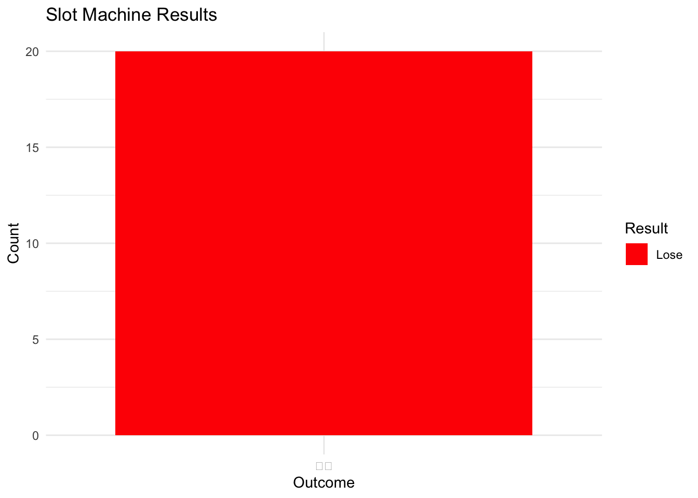

── Attaching core tidyverse packages ──────────────────────── tidyverse 2.0.0 ──
✔ dplyr 1.1.4 ✔ readr 2.1.5
✔ forcats 1.0.0 ✔ stringr 1.5.1
✔ ggplot2 3.5.1 ✔ tibble 3.2.1
✔ lubridate 1.9.3 ✔ tidyr 1.3.1
✔ purrr 1.0.2
── Conflicts ────────────────────────────────────────── tidyverse_conflicts() ──
✖ dplyr::filter() masks stats::filter()
✖ dplyr::lag() masks stats::lag()
ℹ Use the conflicted package (<http://conflicted.r-lib.org/>) to force all conflicts to become errors§5 Spinning the Reels 🎰
Introduction to Tidyverse
Welcome to the exciting world of tidyverse! In this chapter, we’ll build on our knowledge of R by exploring the tidyverse, a collection of R packages designed for data science. We’ll create a virtual slot machine to demonstrate the power and simplicity of tidyverse functions.
Learning Objectives
- 📦 Understand the basics of tidyverse and its core packages
- 🔄 Learn to manipulate data with dplyr functions
- 📊 Visualize data using ggplot2
- 🰠Build a virtual slot machine using tidyverse functions
1 Introduction to Tidyverse 📦
Tidyverse is a collection of R packages that work together harmoniously for data manipulation, exploration, and visualization. Let’s start by loading the tidyverse:
The core tidyverse includes packages like dplyr (for data manipulation) and ggplot2 (for data visualization).
1.1 Learning Check 🏁
2 Data Manipulation with dplyr 🔄
Let’s revisit our deck of cards from the previous chapter, but this time using dplyr functions:
# Create the deck
deck <- tibble(
suit = rep(c("Hearts", "Diamonds", "Clubs", "Spades"), each = 13),
rank = rep(c("Ace", 2:10, "Jack", "Queen", "King"), times = 4),
value = rep(1:13, times = 4)
)
# View the first few cards
deck %>% head()# A tibble: 6 × 3
suit rank value
<chr> <chr> <int>
1 Hearts Ace 1
2 Hearts 2 2
3 Hearts 3 3
4 Hearts 4 4
5 Hearts 5 5
6 Hearts 6 62.1 Hands-On Coding 💻
Try the following:
- Use
filter()to find all the Aces in the deck. - Use
arrange()to sort the deck by suit, then by value. - Use
group_by()andsummarise()to find the average value for each suit.
3 Data Visualization with ggplot2 📊
Now, let’s visualize our deck using ggplot2:
ggplot(deck, aes(x = suit, fill = color)) +
geom_bar() +
labs(title = "Distribution of Cards by Suit",
x = "Suit",
y = "Count")+
theme_minimal()3.1 Learning Check 🏁
4 Building a Simple Slot Machine 🎰
Let’s use our tidyverse skills to create a simple virtual slot machine!
library(tidyverse)
# Define slot machine symbols
symbols <- c("ğŸ’", "🍋", "🍊", "🍇", "🔔", "ğŸ’")
# Function to play the slot machine
play_slot_machine <- function(n_plays = 10) {
tibble(
play = 1:n_plays,
symbol1 = sample(symbols, n_plays, replace = TRUE),
symbol2 = sample(symbols, n_plays, replace = TRUE),
symbol3 = sample(symbols, n_plays, replace = TRUE)
) %>%
mutate(
win = symbol1 == symbol2 & symbol2 == symbol3,
result = if_else(win, "💰", "😢")
)
}
# Simulate 20 plays
results <- play_slot_machine(20)
# Display results
print(results)# A tibble: 20 × 6
play symbol1 symbol2 symbol3 win result
<int> <chr> <chr> <chr> <lgl> <chr>
1 1 🋠🔔 🇠FALSE 😢
2 2 💠🋠🊠FALSE 😢
3 3 🇠🊠🊠FALSE 😢
4 4 🊠🇠🊠FALSE 😢
5 5 🔔 🋠💠FALSE 😢
6 6 💠🔔 🔔 FALSE 😢
7 7 🇠💠🇠FALSE 😢
8 8 🊠🔔 💠FALSE 😢
9 9 💠💠💠TRUE 💰
10 10 💠🊠🇠FALSE 😢
11 11 🇠💠💠FALSE 😢
12 12 🋠🋠💠FALSE 😢
13 13 🇠🊠🋠FALSE 😢
14 14 🇠💠💠FALSE 😢
15 15 💠💠🔔 FALSE 😢
16 16 💠🇠🔔 FALSE 😢
17 17 💠🊠💠FALSE 😢
18 18 💠🋠🇠FALSE 😢
19 19 🊠🔔 💠FALSE 😢
20 20 🔔 🇠💠FALSE 😢 # Summarize wins
summary <- results %>%
summarise(
total_plays = n(),
wins = sum(win),
win_percentage = mean(win)*100
)
print(summary)# A tibble: 1 × 3
total_plays wins win_percentage
<int> <int> <dbl>
1 20 1 5#Visualize results
ggplot(results, aes(x = result, fill = result)) +
geom_bar() +
labs(title = "Slot Machine Results", x = "Outcome", y = "Count") +
theme_minimal() +
scale_fill_manual(
values = c("💰" = "green", "😢" = "red"),
labels = c("💰" = "Win", "😢" = "Lose")
) +
guides(fill = guide_legend(title = "Result"))
This simplified slot machine simulation demonstrates several key tidyverse concepts:
- Using
tibble()to create a data frame - Utilizing
sample()for random selection - Employing
mutate()to add new columns based on conditions - Using
summarise()to calculate summary statistics - Visualizing results with
ggplot2
4.1 Hands-On Coding 💻
Let’s explore our slot machine simulation with some simple exercises:
Count how many times each symbol appears in the first reel (symbol1) after 100 spins.
Calculate the percentage of wins in 100 spins.
5 Conclusion
In this chapter, we’ve introduced the tidyverse and applied its powerful functions to manipulate and visualize data. We’ve built on our previous knowledge of dice and cards to create a virtual slot machine, demonstrating how tidyverse can be used for more complex data operations and analysis.
These skills will be invaluable as you continue your journey in data analysis and visualization with R. In the next chapter, we’ll explore more advanced tidyverse functions and apply them to real-world datasets in digital humanities!